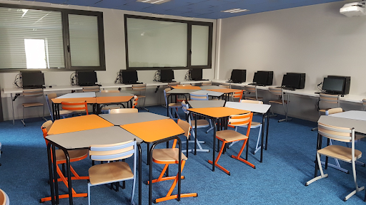
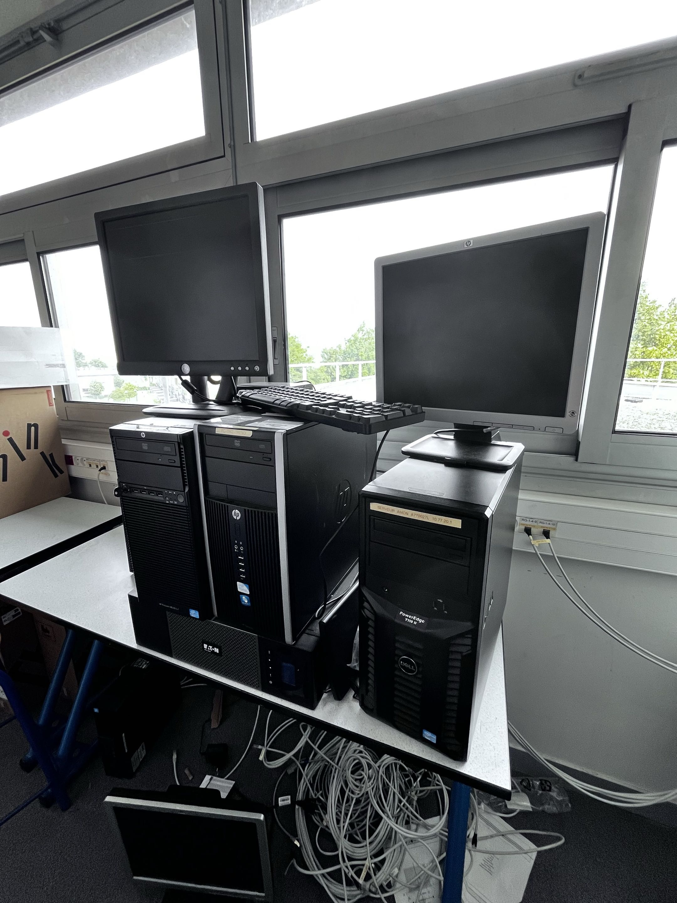
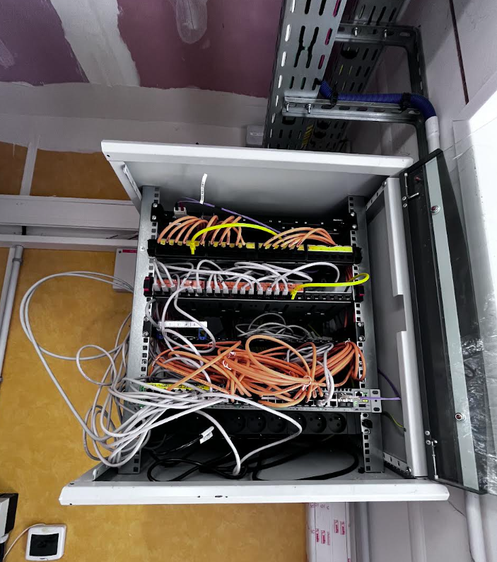
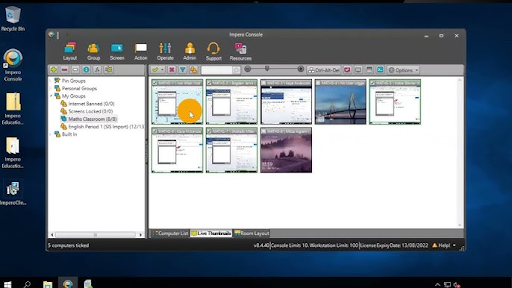
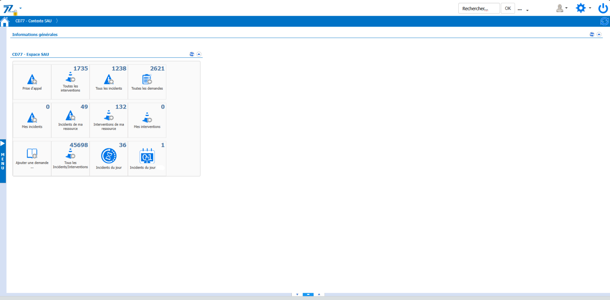

Contexte du stage
Administration IT
d'une collectivité
d'une collectivité
Le Conseil Départemental de Seine-et-Marne gère plusieurs centaines de postes, une infrastructure réseau complexe et de nombreux services aux citoyens. Le service informatique assure la maintenance, l'évolution du parc et le support aux agents.
5
semaines de stage
BTS 1ère année · 2025
6
missions réalisées
🏛️
Secteur public
Collectivité territoriale
🖥️
Support N1 / N2
GLPI · Active Directory
Photos du stage
📁 Dépose tes images dans le dossier images/ avec les noms indiqués ci-dessous, elles s'afficheront automatiquement.

cg77-bureau.jpgPoste de travail / Bureau

cg77-serveurs.jpgSalle serveurs / Baie réseau
cg77-materiel.jpgÉquipements / Matériel

cg77-glpi.jpgCapture écran GLPI

cg77-reseau.jpgSchéma réseau

cg77-equipe.jpgPhoto équipe / Site
Missions réalisées
Mission 01
Support utilisateurs (Helpdesk)
Prise en charge des tickets d'incidents et de demandes via GLPI. Diagnostic de pannes matérielles et logicielles, assistance téléphonique et sur site auprès des agents.
Mission 02
Gestion du parc informatique
Inventaire et mise à jour du parc dans GLPI. Préparation et déploiement de postes (clonage, configuration, intégration au domaine Active Directory).
Mission 03
Templates GLPI personnalisés
Création de gabarits HTML d'e-mails GLPI. Trois templates différenciés par couleur (nouveau ticket, suivi, résolution) pour améliorer la lisibilité des notifications.
Mission 04
Maintenance réseau
Participation à la maintenance de l'infrastructure réseau locale : câblage, configuration de switchs, vérification de la connectivité, dépannage réseau.
Mission 05
Gestion des alertes OpenNMS
Analyse et résolution du spam de notifications OpenNMS. Configuration des seuils d'alerte pour réduire le bruit et améliorer la pertinence des alertes.
Mission 06
Documentation technique
Création de procédures techniques et guides utilisateurs. Documentation des configurations mises en place pour assurer la continuité de service.
Compétences développées
Systèmes & Logiciels
GLPI (ITSM)80%
Windows 10 / 1185%
Active Directory65%
OpenNMS55%
Réseau & Support
TCP/IP & LAN75%
Switching (Cisco)60%
Support N1 / N290%
HTML / Email Templates70%
Déroulement semaine par semaine
Semaine 1
Intégration & prise en main
Découverte de l'environnement, des équipes et des outils. Prise en main de GLPI et des procédures internes. Observation des interventions du support.
Semaines 2–3
Support utilisateurs & inventaire parc
Prise en charge autonome des tickets GLPI de niveau 1. Interventions sur site (matériel, logiciel). Mise à jour de l'inventaire du parc matériel.
Semaine 4
Missions techniques avancées
Configuration des templates email GLPI. Travail sur la supervision OpenNMS. Participation à des déploiements de postes.
Semaine 5
Bilan & documentation
Rédaction des procédures techniques. Bilan de stage, présentation aux tuteurs, préparation du rapport de stage.
Bilan & apports
Compétences relationnelles
Communication avec des utilisateurs non-techniques, gestion des priorités, sens du service, travail en équipe au sein d'un service IT structuré.
Compétences techniques
Maîtrise de GLPI, gestion de parc, déploiement Windows, supervision réseau avec OpenNMS, configuration de templates HTML.
Découverte du secteur public
Compréhension des contraintes IT d'une collectivité : sécurité des données, budget contraint, multiplicité des services et utilisateurs.